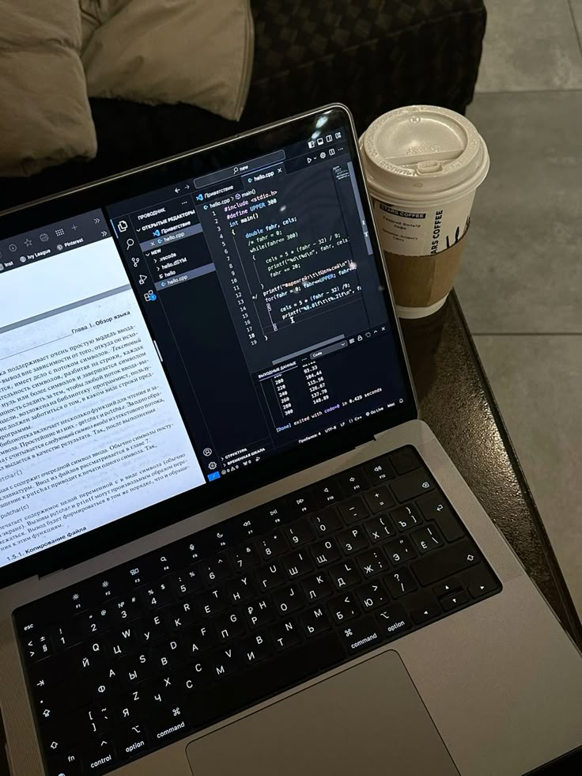

My Path, My Goals, My Skills
From an early age, I have been fascinated by how the world works. Initially, my main interests were physics and engineering — fields I once planned to study. Even today, they remain a strong passion of mine. But over time, my journey led me into computer science, where I found the same problem-solving mindset and innovation that attracted me to engineering, combined with endless possibilities to create.
I began my programming journey with C++, learning not only the fundamentals of coding but also the principles of object-oriented programming. From there, I explored web development — mastering HTML and CSS — and I am now expanding into JavaScript and modern frontend frameworks. My next milestones include becoming proficient in TypeScript, React, Angular, Vue, and backend development with Spring Boot, Docker, and authentication systems like Keycloak and OAuth 2. My long-term vision is to work as a full-stack developer, capable of building complete, high-quality solutions from concept to deployment.
Alongside my studies, I have always worked to maintain independence. I started in gastronomy, where I learned teamwork, adaptability, and performing under pressure. Currently, I work in the security industry, where discipline, responsibility, and awareness are essential. These experiences have strengthened my character and given me skills that go far beyond the technical — such as problem-solving under stress, effective communication, and leadership potential.
Looking ahead, my career goals are clear: to keep improving every day, to never stop learning, and to combine my technical expertise with strong personal values. I want to build technology that is not only functional and efficient but also serves people — technology with purpose.